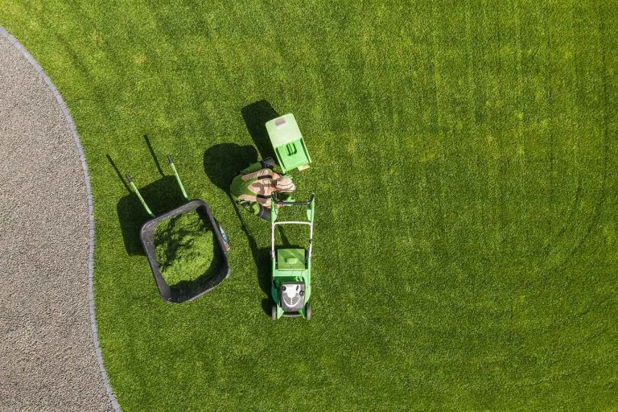

Let us Handle it so You can Enjoy it.

Clinton Yard Care makes sure you get the right quality and consistency in your lawn. We offer an affordable and stress free way to grow your ideal lawn. Through all of our services we can have your yard looking as nice as it can get.
Our Lawn Care Services:
- Fertilization & Weed Control
- Power Seeding
- Tree & Shrub Care
- Lawn Mowing
- Mulch Installation
- Power Washing
Clinton Yard Care
5150 N Main Street
Clinton, UT
801-692-4587
5150 N Main Street
Clinton, UT
801-692-4587